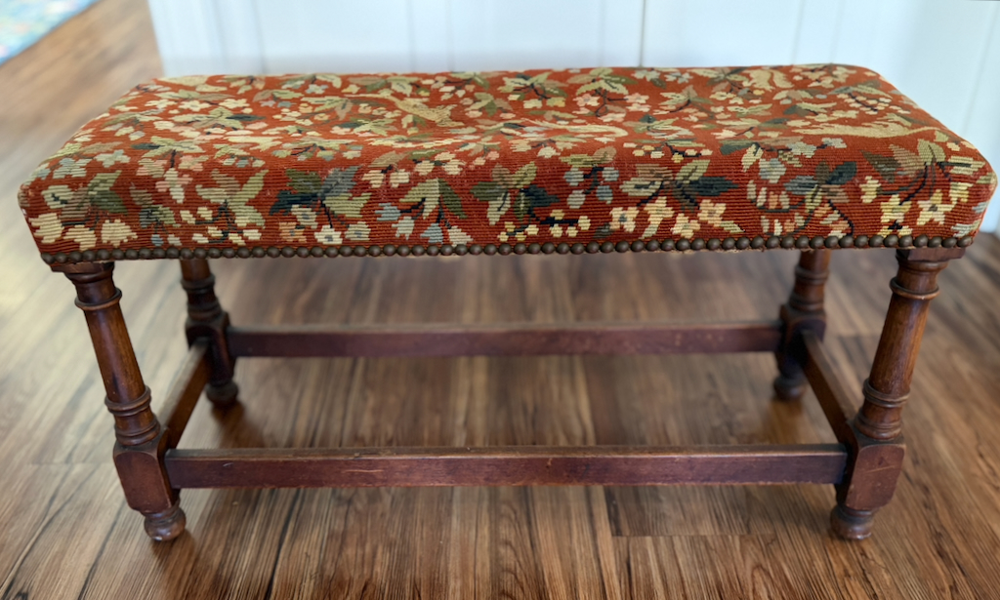

Upholstered Jacobean Revival-style bench
A Family Heirloom
History
Marion Boisot Ford furnished her homes in Pebble Beach and Carmel Valley with many beautiful pieces of furniture. Among them was this upholstered Jacobean Revival-style bench, which became part of the Ford family's history. Patricia Ford was photographed sitting on the bench as a young girl at the family’s 17-Mile Drive house in Pebble Beach. Years later, the same bench appeared in photographs from her 1951 wedding to Alexander Alexander D. Henderson at her mother’s home in Carmel Valley.
After Marion Ford died in 1990, the bench was passed down to Patricia, who kept it in her Carmel home on Scenic Road. Following Patricia’s death in 2024 and the sale of the Carmel house, the bench was passed down to her son, Greg Henderson, preserving this family heirloom for another generation.


Last update: October 5, 2026